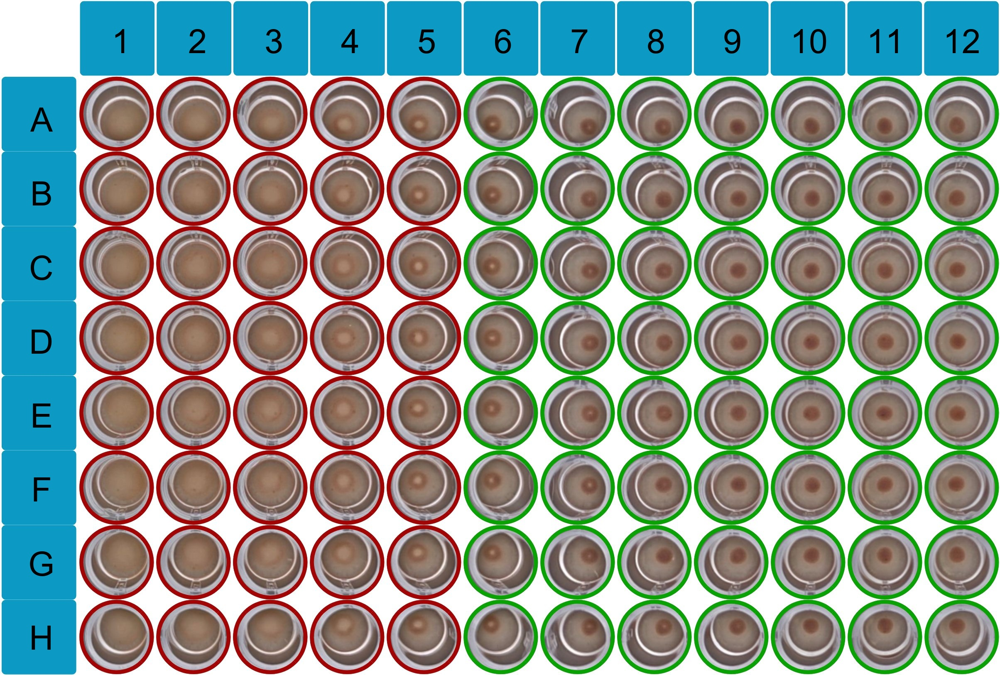
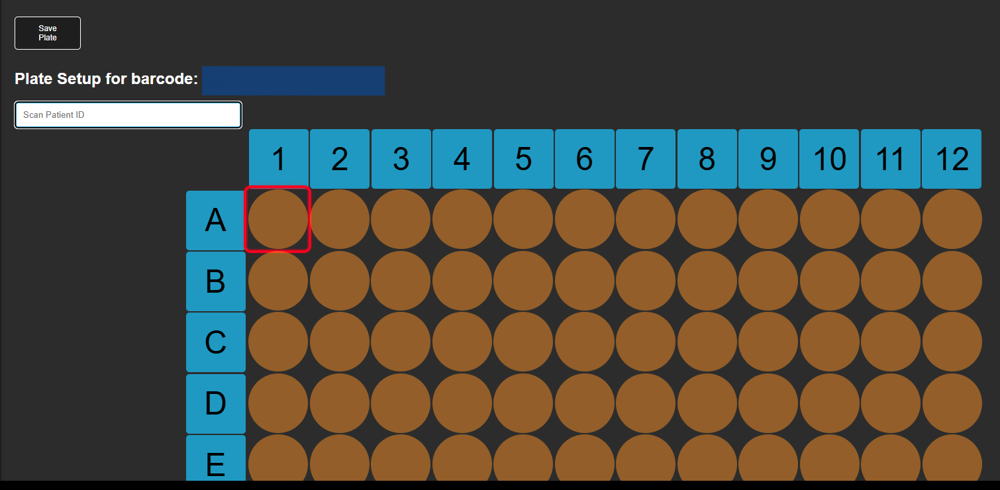

High-resolution imaging with advanced recognition algorithms designed for difficult-to-read agglutination patterns and well-based reactions.

Intuitive scoring system that provides clear, easy-to-understand results by using dynamic borders.
Compatible development pathways include:
The MikroBot scoring logic is designed to be flexible and adaptable to various assay formats and scoring criteria including:
Enquire about our multi-format compatibility options to see how we can meet your specific needs.
Samples and plates can be registered in advance using barcode scanning or manual entry. Ensuring every sample is correctly identified and linked to its corresponding well, reducing transcription errors and simplifying laboratory workflows.

MikroBot reads tracked plates during automated well scanning, enabling real-time association of results with each sample. This data is used to manage stored images, generate structured result files, and seamlessly integrate with laboratory information systems (LIMS).